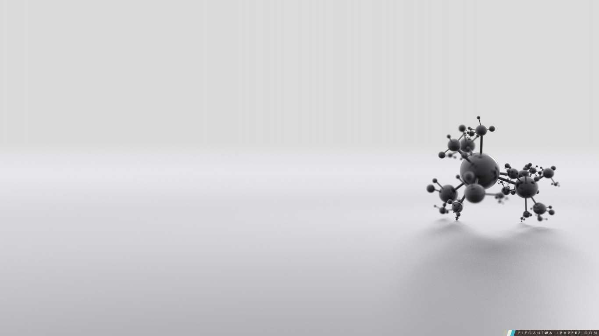

Molécules organiques linéaires
Famille
ⓘ
Nombre de carbones
ⓘ
Position de la fonction
ⓘ
Alcanes
Alcènes
Alcynes
Alcools
La formule brute est :
La formule semi-développée est :
Le nom de la molécule est :
La représentation de la molécule est :